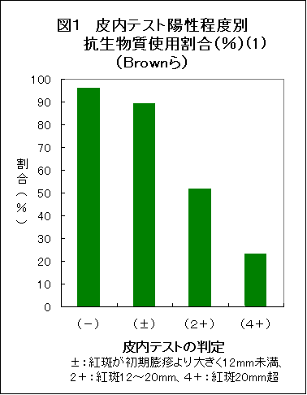
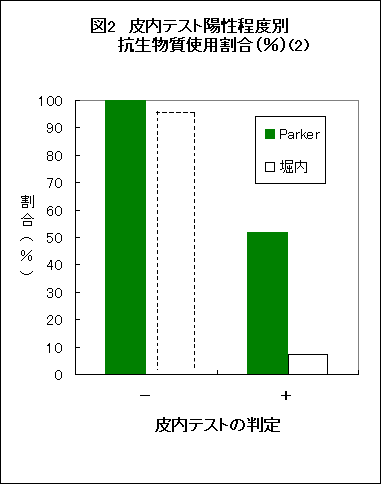
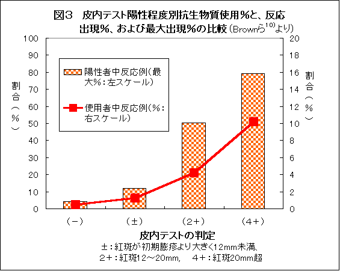

抗生物質皮内テスト廃止は死亡事故を多発させる
医薬ビジランス研究所 浜 六郎
はじめに
厚生労働省（厚労省）はペニシリン剤やセフェム剤など、これまで実質的に実施を義務付けていた予備皮内反応テスト（以下「皮内テスト」と略：註a）を廃止する添付文書の改訂を行った1)。これは、2002年5月2)より、日本化学療法学会が検討し厚労省に対して提言をしていた内容3,4)に沿ったものである。
医薬品・治療研究会では、抗生物質の皮内テスト5,6)や放射線造影剤の予備テスト7,8)など、アナフィラキシー(註b）防止のための予備テストの重要性について指摘してきたが、今回、ついに、アナフィラキシー死を防止するための有力な手段の一つ「皮内テスト」が廃止されてしまった。
そこで、今一度、廃止の根拠が極めて薄弱であること、皮内テストがいかに死亡事故防止に有用であるかを述べたい。
また、廃止により日本ではすでに「尾高教授事件」9)（註c）に相当する事故が起きていることを指摘するとともに、今後このような事例が多発するであろうことを予告し、良識ある医療現場では、皮内テストの継続をされるよう訴えたい。
- 註a：皮内テスト
- 皮内反応テストには、抗生物質使用前に実施する予備的皮内反応テストと、アナフィラキシーが生じた後で原因物質の確認のために行う確認皮内反応テストがある。ここでは、予備皮内反応テストについて主に扱うので、特に断りのない限り、「皮内テスト」は「予備皮内反応テスト」を意味する。
- 註b：アナフィラキシー
- アナフィラキシーは『呼吸障害（喉頭浮腫あるいは喘息）および低血圧（気絶、虚脱、意識消失）という重篤な２つの徴候のうち、１つあるいは両者がある重篤で致死的な全身性の反応』と実践的に定義される10)。アナフィラキシーで生じる反応（臨床症状）は、皮膚（ジンマシン、紅斑、浮腫など）、呼吸器（窒息、呼吸不全、呼吸困難、喘鳴、咳、くしゃみなど）、消化器（嘔吐、下痢、腹痛など）、循環器（血圧低下、高血圧、不整脈、心不全など）、神経系（けいれん、意識消失など）など、多臓器にわたる。
基本的な発症メカニズムは、マスト細胞（肥満細胞）あるいは好塩基球から放出された生物学的に活性の化学伝達物質の存在による。そのうちIgEを介する反応は「アナフィラキシー反応」、IgEを介さない反応が「アナフィラキシー様反応」と呼ばれるが、両者を区別することは、臨床的には不可能である。
どちらの機序で起きても治療方法は同じであり、アドレナリンが第一選択である。迅速かつ適切な診断と初期治療が患者の生命予後を左右する。
- 註c：尾高事件（小川定男ら「クスリへの告発状」9)より
- 1956年（昭和31年）3月、尾高朝雄東大教授が歯科処置後にペニシリン20万単位を上腕部に注射されショック死した事件である。1〜2分間もんでいたがまくり上げていたワイシャツの袖を下ろしたとたんにそばのイスに崩れるようにもたれかかり、「胸が苦しい」と訴え間もなく意識不明となり、酸素吸入等応急処置がなされたが死亡した。当時ペニシリンによってショック死した人は厚生省（当時）が把握していただけでも100例に及ぶといわれていたが,著名な学者が急死したことで大きな社会問題となった。
【１】従来の添付文書と改訂添付文書の違い
注射用の抗生物質製剤、サルファ剤及び合成抗菌剤の［重要な基本的注意］の項のショックに関する記載が2004年9月29日付けで改訂された。従来の記載1.が削除され、2.の内容に変更された。
- 従来の添付文書情報
［重要な基本的注意］の項のショックに関する記載
(a)ショックがあらわれることがあるので、十分な問診を行う。なお事前に皮内反応を実施することが望ましい。
(b)ショック発現時に救急処置のとれる準備をしておく。また投与後患者を安静の状態に保たせ、十分な観察を行う。
- 改訂情報（平成16年9月29日指示分）1)
［重要な基本的注意］本剤によるショック、アナフィラキシー様症状の発生を確実に予知できる方法がないので、
次の措置をとること。
(1)事前に既往歴等について十分な問診を行うこと。なお、抗生物質等によるアレルギー歴は必ず確認すること。
(2)投与に際しては、必ずショック等に対する救急処置のとれる準備をしておくこと。
(3)投与開始から投与終了後まで、患者を安静の状態に保たせ、十分な観察を行うこと。特に、投与開始直後は注意深く観察すること。
従来、抗生物質の使用前に、アナフィラキシー発現時に救急処置のとれる準備をし、開始後は十分な観察を行い、アナフィラキシーの症状が出現すれば直ちに適切な処置、とくにアドレナリン注射の必要があった。
しかし、皮内テスト廃止後は、「必ず」ショック等に対する救急処置のとれる準備をしておくこと、と、「必ず」が挿入され、強調された。
また、「患者を安静の状態に保たせ、十分な観察を行うこと。」では、「投与後は」だけでなく、「投与開始から投与終了後まで」注意深く観察し、「特に、投与開始直後は注意深く観察すること。」というように、強調されている。
したがって、観察をより厳密にするように義務付けたものであり、ある意味では、医師に対してより厳しい観察と症状発現時の速やかな処置を義務付けたということもできる。
皮内テストを実施していてもしていなくとも、注意深い観察と、症状発現時の適切な処置が必要であることには変わりない。にもかかわらず、筆者が皮内テストを重視するのは、死亡するような激烈なアナフィラキシー例の大部分が皮内テストでチェックできていたと考えるからである。
その点に注目しながら、皮内テストの重要性を再度強調し、医療現場の適切な対応を期待したい。
【２】抗生物質の皮内テスト実施と廃止
（１）抗生物質の皮内テスト実施のきっかけ
1956年、東大教授が歯科治療にペニシリンを注射され、アナフィラキシーで死亡した事件が起き社会問題となった9)。これがきっかけとなり、可能な限り予知する方法として、ペニシリンに対する皮内テストが義務化され、その後、セフェム系やカルバペネム系抗生物質などについても、皮内テストが実質的に義務付けられるようになった。
（２）日本化学療法学会の「廃止」の提言とその根拠
ニューキノロン系抗菌剤の注射剤（シプロフロキサシン注）が2000年に承認され、これについても皮内テストが義務付けられたが、非特異的な陽性反応が多く現れたために、皮内テスト廃止の動きが起こり始めたと考えられる。日本化学療法学会が中心となって、廃止が検討され始めた2)。
初めて廃止についての提言が公表されたのは、2002年5月であった2)。その後、日本化学療法学会に皮内反応検討特別部会の報告書(以下、「学会報告書」と略)が公表された3)。
学会報告書の根拠をみてみよう。
- 有用性のエビデンスがない
- 皮内テストがアナフィラキシーを予知しているとは言い難い事実がある
a)皮内テストを実施していない米国より日本の方が高頻度
b) 皮内テストを実施していないバンコマイシンと実施しているセフェム剤が同程度
- 真のアレルギー（アナフィラキシー）より皮内テスト陽性者が圧倒的に多いことを経験している臨床現場から、患者に必要な抗菌剤が使えないことによる患者の不利益が重大との認識をしている医師が多い
- ただし、事前のアレルギー歴聴取と静脈内投与開始20〜30分間の患者の観察とアナフィラキシー発現への対処の備えが必要である。
（３）根拠のない「抗生物質皮内テスト廃止の根拠」
最後の、「事前のアレルギー歴聴取と静脈内投与開始20〜30分間の患者の観察とアナフィラキシー発現への対処の備えが必要である。」は別として、1。〜3.の理由がいかに根拠のないことか、詳細は次項で述べるが、問題点を以下に概観する。
- 学会報告書は,ほとんど調べず「有用性のエビデンスがない」としている
「即時型アレルギー確認のための試験としての皮内テストは確立されているが、アレルギー歴のない不特定多数への有用性は確立されていない」「有用性のエビデンスがない」と学会報告書3)が結論するに至るまでに検討されたエビデンスは以下のようなものである。
- 予見性が確立されている即時型アレルギー用テストは、ラテックスアレルギーのプリック試験、口腔アレルギー症候群のas isプリック試験のみ
- 皮内テストには非特異的陽性例が多い（アナフィラキシーの頻度は5万人中1人程度だが、皮内反応陽性者はセフェム剤1/200、カルバペネム剤1/1000のほか、特にニューキノロン剤の非特異陽性例が多く（1/11）、皮内反応の強さと有害事象との間には関連がなかった。
- セフェム剤の第I相試験で陰性例にアナフィラキシーが見られた。
ところが、テストの有用性評価の基本であり、収集・検討すべき、皮内テストのアナフィラキシー検出の「感度」と「特異度」に関する内外の「エビデンス」を何も調べず「有用性のエビデンスがない」としている（後述）。したがって、「抗生物質皮内テスト廃止の根拠」自体に根拠がない。また、日本では皮内テスト陰性例でも、たとえばセフォチアムは8000人に1人、ピペラシリンは4000人に1人がアナフィラキシーを起こしている13,14)。皮内テスト陽性者ではさらに頻度が高く、激烈なアナフィラキシーが多くなるはずである。この点に対する配慮が、学会報告書にはまったくない（後述）。
- 皮内テストをしても米国より高頻度で、バンコマイシンと同程度なら、廃止でアナフィラキシーも死亡も爆発的な増加が予測される（次項で詳述する）。
- あえて危険の可能性を冒すより安全な他剤を用いるべき。安全と考えるなら陽性でも実施すればよい。是非必要なら減感作後に使用する方法もある。
表１ 皮内テストはなぜ必要性か？
- 有用性評価には感度と特異度のデータが必要
- だが「有用」を実証する完全無欠のデータはない：なぜか？？
- 完全な比較：陽性者と陰性者に同じ抗生物質を使用し、アナフィラキシーの頻度を比較すべき：このような危険な比較試験（調査）は非倫理的:
- だから、当然実施されていない
- 皮内テスト廃止は、臨床試験無しで非倫理的医療を実践することになる
——臨床試験が非倫理的でも、診療は倫理的なのか？——
- アメリカより日本でアナフィラキシーが多いなら、皮内テストに意味がある：NNTは1000〜3000か？
（４）皮内テストはなぜ必要か？ なぜ廃止は危険か
- 有用性評価には感度と特異度のデータが必要
すでに述べたように6)、検査の有用性評価のためには感度と特異度、さらには,陽性適中率、および陰性適中率のデータが必要である（表2、表3）。
表２ 予備皮内テストの価値評価に必要なデータ
|
薬剤使用によるアナフィラキシーの発現 |
| あり | なし | 合計 |
| 皮内反応テスト |
＋ | a(e) | b | a+b |
| − | c | d | c+d |
| 合計 | a+c | b+d | a+b+c+d |
| e:予備皮内テストによるアナフィラキシー件数 a>>e |
表３ 予備皮内テストの価値判定指標
| Ａ。感度、特異度、適中率 |
| 1. 予備皮内テストの感度 | a/(a+c) |
| 2. 予備皮内テストの特異度 | d/(b+d) |
| 3. 陽性反応適中率 | a/(a+b) |
| 4. 陰性反応適中率 | d/(c+d) |
| 5. 陰性反応不適中率 | c/(c+d) |
| （見逃し率：陰性者中アナフィラキシー発現率） |
| Ｂ。予備皮内テスト実施時と非実施時の全患者中アナフィラキシー発現率およびそのリスク比 |
| 6. 予備皮内テスト実施時 | (c+e)/(a+b+c+d) |
| 7. 予備皮内テスト非実施時 | (a+c)/(a+b+c+d) |
| 8. リスク比（相対危険） | (a+c)/(c+e) |
| （実施時に対する非実施時のリスク比） |
| Ｃ。NNT およびNNH |
| 9. アナフィラキシー防止のNNT | (a+b+c+d)/(a-e) |
| 10. 予備皮内テストの NNH | (a+b+c+d)/e |
| 11. 予備皮内テスト非実施のNNH | (a+b+c+d)/(a-e) |
| a>>c、a>>eと予想される |
- 「有用」を実証する完全無欠のデータはない：なぜか？？
ところが、皮内テストの有用性を実証するため、この表をすべて埋めることができる「完全無欠」のデータは確かにない。これは事実である。
- 全無欠の調査がない理由は、その調査が「非倫理的」だから
完全無欠の調査がないのは、それなりの理由がある。完全無欠のデータを作るためには、皮内テストの陽性者と陰性者で同じように抗生物質を使用し、アナフィラキシーの頻度が同等であることを確認する必要がある。
しかし、皮内テストを実施して明らかに陽性である人に抗生物質を使用することができるであろうか。偽陽性程度、あるいは弱陽性程度の場合ならともかく、明瞭に陽性の人、たとえば「みみず腫れ」のような強陽性の人に治療量の抗生物質を使用できるであろうか。そのような人すべてに一律に抗生物質を使用する臨床試験（調査）は、明らかに非倫理的である。
- だから、当然実施されていない
したがって、当然ながら、このように完全な形の比較臨床試験（調査）は実施されていない。皮内テスト陽性者にも抗生物質を使用して、陰性者と比較した調査はあるが、皮内テストが明らかに強陽性者には抗生物質が使用されていないため、完全無欠の臨床試験（調査）にはなりえないのである。
実際、できるかぎり完全無欠となることを目指した調査はなされているが。軽い陽性例には抗生物質が実施されても、ひどい陽性例には抗生物質の使用がされないため、完全無欠の調査にはならない（図1、図2）。


図1はBrownら10)の報告によるもので、皮内テストで陰性なら大部分(96％)に治療目的の抗生物質が使用され、偽陽性程度なら89％に使用されたが、紅斑が12〜20mmの陽性者では抗生物質使用は52％に減少し、20mm以上の明瞭な陽性者だと23%にしか治療目的の抗生物質は使用されなかった。また、後述するように、その中から、アナフィラキシーが生じている。
図2は、Parkerら11)の調査と日本の堀内ら12)の調査である。Parkerら11)の調査ではペニシリンアレルギーの既往のない1191人に皮内テストを実施した。皮内テスト陰性者1147人には全員に治療目的の抗生物質を使用しアレルギーを生じなかったが、陽性者44人の約半数21人には抗生物質が使用されず、使用されたのは23人（52％）であった。そして、後述するように、その中からアナフィラキシーが生じている。
堀内ら11)の調査では、陰性者については述べられていないが、皮内テスト陽性者が55人いた中で、治療目的で抗生物質が注射されたのはわずか4人（7％）に過ぎなかった。後述するように、4人のうち1人に、アナフィラキシーに準じる全身の促進型ジンマシンが生じた。
そして、これらの調査は皮内テスト陽性者全員への使用でないため、完全無欠とは言い難いが、皮内テストの有用性を裏付けている（後述）。
- 皮内テスト廃止は、臨床試験無しで、非倫理的医療を実践するものである
皮内テストを廃止していきなり抗生物質を使用することは、臨床試験ができない非倫理的なことを、臨床試験による安全性の検証の無いまま、日常医療として実践するものといえる。非倫理的なために臨床試験もできないようなことを、医療として実施することは倫理的なことであろうか？
- 学会報告書が根拠としたアナフィラキシー頻度調査は不正確
日本化学療法学会は、皮内テストを実施していない米国よりも、日本でアナフィラキシーが多いことは、皮内テストがアナフィラキシーの減少に役立っていない証拠の一つであると、主張している。
しかし、この調査は、アナフィラキシー例数（分子）も、使用患者数（分母）も不完全な調査である。
分子のアナフィラキシー例数には、市販後の自発報告症例を用いている。
また、分母の使用患者数は、1日当たりの常用量×7日間を1人の使用量と仮定して、調査期間内の総販売量から推定したものである。
分母にも、分子にも、極めて不確実なデータを用いて、アナフィラキシーの頻度を推定したものである。このような不確実な調査に基づいて、日本で1万人当たり0.1〜0.14人、米国で1万人当たり0〜0.06人とし、日本の方が多いとしているのである。
自発報告では一般に、アナフィラキシーの報告は低すぎる10)。また、疫学調査では「アナフィラキシーの定義」が異なり、調査対象である「集団の定義」が異なるため、結果が異なってくる10)。そのため、アナフィラキシーの発生頻度を知ることは困難であるとされている10)。まして、発生頻度を2つの集団で比較することはさらに困難である。正確な頻度は、使用患者数を把握し、正確なアナフィラキシーの定義に基づき集中モニタリングをして把握した結果でなければ信頼できないであろう。
その意味で、日本化学療法学会の調査方法で2つの集団の頻度を比較検討することはまず不可能である。
- 米国でもテストなしで1万人中3.2人、皮内テストで1.3万人中0に
たとえば、Brownら10)の調査では、皮内テストを実施していない期間には、25396人中8人（3.2人／1万人）がアナフィラキシーを起こした。皮内テストを実施するようになってからは13194人に実施してアナフィラキシーを起こしたのは0であった（p=0.016で有意）。

Brownら10）によれば、皮内テストの陽性程度が強くなるほど害反応の出現頻度は高い（図3）。皮内テスト陽性で抗生物質を使用しなかった人には最大全員に症状が起きうると考えれば、頻度は最大約80％にもなりうる。
Parkerら11)の報告によれば、皮内テスト陽性者44人中治療目的で抗生物質が使用された23人（52％）には4人（23人中の17％）にアナフィラキシーが生じた。図4には、これが44人中の9.1％に相当することが表示されている。また、皮内テスト陽性者で抗生物質を使用したうちの5人にジンマシンが生じたので、アナフィラキシー型の症状を合計9人（39％）に認めたことになる。

皮内テストが陽性で抗生物質を使用しなかった21人は強陽性の人が多かったと思われるので、残りの21人ではアナフィラキシーの頻度は17％以上であろう。可能性として最大100％に起こりうるが、実際に抗生物質を使用した23人と同じ割合で発生したとすれば44人中、合計8人にアナフィラキシーが発生することになる。1191人中4人なら34／1万人、8人なら64人／1万人の割合と計算される。
日本でも、堀内12)らは、アレルギー歴のない2209人に皮内テストを実施し、陽性者55人（2.5％）のうち4人に注射剤を使用して1人に全身の促進型ジンマシンが生じたと報告している。また、55人の陽性者中27人にPK反応を実施し、8人（30％）に陽性が確認されている。Brownら10)の報告では、ジンマシン対アナフィラキシーの比は136：8である。堀内ら12)のジンマシン例は促進型でありジンマシンの中でも重症の部類であるから、皮内テストで陽性であった55人全員に抗生物質を使用すれば、1人や2人はアナフィラキシーを生じていたと推察される。したがって、皮内テストを実施しなければ、1000〜2000人に1人はアナフィラキシーを生じうるということを示唆するデータである（なお、皮内テスト陰性者に抗生物質が使用されて反応があれば何らかのコメントがあるはずであるが特にコメントされていない）。
- 日本では皮内テストで減らせても4000人に1人にアナフィラキシー
日本の市販後調査(1) 13,14)（表4）では使用者の母数がわかっており、アナフィラキシーはショックおよびショック様症状としてまとめて報告されていた。
筆者らが調査したセファクロルによるアナフィラキシーの頻度の約8000人中4人（5.0／1万人）15,14)と比較して、市販後調査(1)のセファクロルによるショック・ショック様症状の頻度は約3.5万人中5人（1.4／1万人）とやや少ないが、差は有意ではなく、アナフィラキシーの頻度を比較的正確に反映していると考えられる。表4をもとにセフェム剤やペニシリン剤のアナフィラキシーの発生率をみると、セフォチアム（1.26／1万）、ピペラシリン（2.4／1万）、チカルシリン（2.3／1万）などの頻度は高く、頻度が低いものでも、セファピリン（1.0／1万）や、セフメタゾール（0.4／1万）、セファゾリン(0／1万人)などであった(表4)13,14)。
表４ 抗生物質・抗菌剤によるショック・ショック様症状発生頻度比較
（市販後3年間の副作用調査*aより）
| 抗生物質*b |
一般名 |
主な商品名 |
使用患者数 |
ショック例数 |
頻度（/万人） |
| 経口剤 |
ペニシリン剤 |
アモキシシリン |
サワシリン |
57970 |
0 |
0 |
|
セフェム剤 |
セファクロル |
ケフラール |
35136 |
5 |
1.4 |
|
7972 |
4 |
5.0 *c |
|
セファレキシン |
ケフレックス |
70146 |
0 |
0 |
| 注射剤 |
ペニシリン剤 |
ピペラシリン |
ペントシリン |
20902 |
5 |
2.4 |
|
セフェム剤 |
セフォチアム |
パンスポリン、ハロスポア |
65705 |
8 |
1.3 |
|
セフメタゾール |
セフメタゾン |
25797 |
1 |
0.4 |
|
セファゾリン |
セファメジン |
10816 |
0 |
0 |
|
アミノグリコシド剤 |
トブラマイシン |
トブラシン |
78602 |
3 |
0.4 |
|
アミカマイシン |
アミカシン |
66260 |
2 |
0.3 |
|
ジベカシン |
パニマイシン |
32446 |
0 |
0 |
|
ゲンタマイシン |
ゲンタシン |
14802 |
0 |
0 |
| |
|
アミノグリコシド剤合計 |
192110 |
5 |
0.26 |
| *a： |
厚生省副作用情報No１〜No88およびメーカー提供資料による市販後3年間の調査より |
| *b： |
患者数1万例以上の抗生物質・抗菌剤を掲載（文献14より抜粋) |
| *c： |
阪南中央病院における害反応モニタリングより（文献15） |
Brownら10)の報告による皮内テスト実施時の頻度と同等ないしは、それ以上である。皮内テストを実施していても、Brownらの報告の皮内テスト陰性者のアナフィラキシーの頻度（1.3万人中0）よりも高頻度である。その理由の一つとして考えられることは、日本化学療法学会の調査3)で明らかになったように、日本では必ずしも全例で皮内テストが実施されていないことが関係しているかもしれない（「通常皮内テストを実施しない」とする医師が全科で約10％、小児科で25％）。また、製剤によって、アナフィラキシーを起こしやすいもの（セフォチアム、ピペラシリン、チカルシリンなど）がありうるであろう。
学会報告書中で示された市販後調査(2)の結果では、CAZ（セフタジジム：0.09／1万）、CFRM(セフェピム：0.136／1万)、IPM(イミペネム:0.12／1万)などであった。これらの発生頻度は、分母が明確な上記の市販後調査(1)に比べて極めて低い。調査方法がまったく異なるためと考えられる。
また、同様に、日本化学療法学会3)の調査した米国での調査結果が、Brownら10)やParkerら11)の詳細な調査に比較していかに低頻度であるか、したがって、いかに不正確な調査であるかが理解できよう。
（２） 皮内テストは診断的価値とともに予防的価値がある
——廃止でアナフィラキシーによる死亡事故が多発するだろう——
このように、皮内テストは「有用でない」と結論するためのデータよりも、「有用性」を示唆するデータの方が圧倒的に多いのである。
日本ではこれまでに、不完全ながら皮内テストを実施していて、たとえば、ペニシリン剤ピペラシリンやチカルシリンで約4000人に1人、セフェム剤セフォチアム（パンスポリンなど）で約8000人に1人程度がアナフィラキシーを起こしている13,14)。
この状態で皮内テストを完全に廃止すれば、どうなるであろうか。
学会報告書の調査によれば、「通常皮内テストを実施しない」とするものが全科で約10％、小児科で25％ということであるので、現在よりも、少なくとも2倍から10倍の頻度（数百人から2000人に1人の割合）でアナフィラキシーが生じ、しかも重症例の割合が飛躍的に増加し、中には死亡する人も多数に上ると予想することはそれほど困難ではないだろう。
もちろん、抗生物質によるアナフィラキシーはアメリカよりも日本で多発する傾向があることは否定できない。ペニシリン系、セフェム系、キノロン系の経口抗生物質や抗菌剤の使用人数は日本が欧米に比較して圧倒的に多い。したがって、より多数の人が感作されている可能性がありうるからである。
β-ラクタム剤やキノロン剤で感作されアレルギーを示す人の割合が欧米よりも高いならば、逆に「皮内テスト」を実施する意義が大きいことを意味している。
Brownら10)の報告で、皮内テストを実施していない時期に約24000人に8人（3000人中1人程度の割合）がアナフィラキシーを生じたが、皮内テストを実施し始めて、皮内テスト陰性者13000人中アナフィラキシーは1人もでていない。それだけでなく、ジンマシンを生じた人の頻度も1万人中54人から、27人に減少した。つまり、即時型アレルギーの代表例であるジンマシンという形で現れる人は出てもその数が少なくなり、死亡につながるアナフィラキシーは完全に防止できているということなのである。
もっと多数に皮内テストを実施すれば、陰性者の中にもアナフィラキシーを生じる人はいるかもしれないが、ジンマシンとアナフィラキシーの減少に見るように、全体として明らかに軽症化しているので、死亡につながるような重篤なアナフィラキシーが重点的に予知できると考えることができる。
Brownら10)のデータでは13000人でアナフィラキシーは0であったが、皮内テスト陰性者24000人中アナフィラキシーが1人生じたと仮定すれば、24000人中の7人（3400人に1人）はアナフィラキシーを免れることができることになる。したがって、Brownらのデータから、NNTは3000〜3400と計算できる。
たとえ皮内テストで10000人に1人程度の偽陰性があり、アナフィラキシーが起きたとしても、日本では、抗生物質の種類によっては1000〜2000人に1人のアナフィラキシーが防止できる可能性がある。そのなかには、死亡するほどの劇症アナフィラキシーがあるはずであり、そうした例の多くは皮内テストが陽性になるため、ほぼ確実に予知でき、死亡を予防できるはずである。
このように考えれば、皮内テストの有用性は確実である。
おわりに
今回の添付文書改訂前に、病院の方針として皮内テストを廃止していて、抗生物質を点滴開始後約6分で心停止するという劇症アナフィラキシーを生じて患者が死亡した例についての相談が医薬ビジランス研究所に寄せられている。尾高事件に相当する例である（機会をあらためて紹介したい）。
皮内テストが陰性でもアナフィラキシーを起こす人はあるが、その場合には、
激しい症状になることは極めて稀であり、もう少しゆっくりした経過となる。早期に気付き、アドレナリンを少量皮下注射し、コルチコステロイド剤の注射をすれば軽快し、心停止に至ることは極めて少ない。
したがって、上記の例は、通常のアナフィラキシーのなかでも最も急激な経過をとった例といえる。その重大な原因の一つとして、皮内テストを実施していなかったことを挙げざるをえない。
皮内テストを実施していれば、点滴開始後6分で心停止するほどの超重症例は、ほぼ確実に皮内テストが陽性となり除外されるはずだからである。
もし医療現場で完全に皮内テストを中止すれば、今後、類似死亡事故が多発することは確実であると予告する。
これはこれまでの「エビデンス」からでも十分に推測が可能である。良識ある医療現場では、無駄な死、不幸な死を防止するために、注射後の十分な観察だけでなく、引き続き「皮内テスト」の継続をされるよう訴える。
厚生労働省は抗生物質の皮内テスト義務付けを継続すべきである。
なお、2004年10月28日発行「医薬品・医療用具等安全性情報206号」において詳細が報告された16)。厚生労働省では、日本化学療法学会等からの要望を受け、薬事・食品衛生審議会の専門委員により検討がなされ、同学会の見解に沿った安全対策をまとめた。したがって、廃止の理由も基本的に学会の見解と同様である。
参考文献
- http://www.info.pmda.go.jp/kaitei/kaitei20040929-2.html#2
- Japan Medicine 2002.5.15
- (皮内反応検討特別部会報告』日本化学療法学会雑誌2003(8)：51：497-506
- 抗菌薬投与に関連するアナフィラキシー対策のガイドラインとその概要版
- 浜六郎、抗生物質の皮内テスト：アナフィラキシー・ショック予防に毎回必要、ＴＩＰ「正しい治療と薬の情報」、１３：95-98、1998
- 浜六郎、抗生物質の予備皮内テスト中止は危険、ＴＩＰ「正しい治療と薬の情報」、１７：65-67, 2004
- 医薬品・治療研究会、ヨード造影剤予備テストの重要性、ＴＩＰ「正しい治療と薬の情報」、５：57-63, 1990
- 浜六郎、ヨード造影剤と安全性(3)(4)、ＴＩＰ「正しい治療と薬の情報」、６：17-18, 1991
- 小川定男、浜六郎、クスリへの告発状、エール出版、1976
- Brown BC et al. Penicilloyl-polylysine as an intradermal test of penicillin sensitivity. JAMA 189: 599-604, 1964
- Parker CW et al. J Exp Med 115: 821 （堀内淑彦、全身反応(11)治療、in 「薬剤アレルギー」小嶋理一他編、朝倉書店より引用）
- 堀内淑彦ら、ペニシリンによる皮膚反応 特に因子分析による解析について、アレルギー 15: 474-483, 1966
- 厚生省副作用情報No1〜No88、およびメーカーから提供された情報をもとに調査した文献13）より引用
- 浜六郎、セファクロル（ケフラール）、重症アレルギー反応の多発と有用性への疑問、ＴＩＰ「正しい治療と薬の情報」、３：57-63、1988
- Hama R et al. High incidence of anaphylactic reactions to cefaclor. Lancet. 1988 Jun 11;1(8598):1331.
- 医薬品・医療用具等安全性情報、No.206